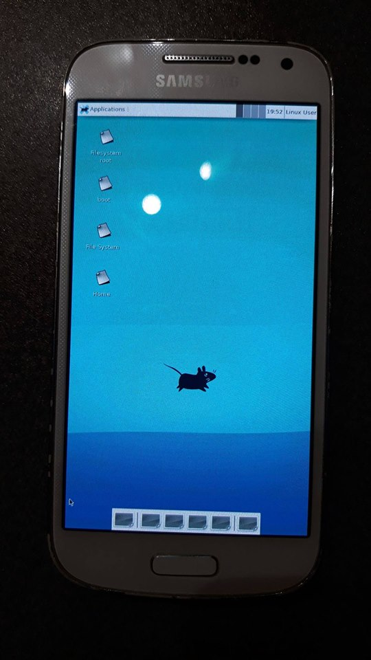

Samsung Galaxy S4 Mini LTE (samsung-serranolte)
Jump to navigation
Jump to search
|
 S4 Mini running PostmarketOS and Xfce4 | |
| Manufacturer | Samsung |
|---|---|
| Name | Galaxy S4 Mini LTE |
| Codename | samsung-serranolte |
| Released | 2013 |
| Category | testing |
| Original software | Android 4.4.2 |
| Hardware | |
| Chipset | Qualcomm MSM8930 Snapdragon 400 |
| CPU | 1.7 GHz dual-core Krait 300 |
| GPU | Adreno 305 |
| Display | 960x540 |
| Storage | 8 GB, microSD |
| Memory | 1.5GB |
| Architecture | armv7 |
{kind=link}
| USB Networking |
Works
|
|---|---|
| Flashing |
Works
|
| Touchscreen |
Works
|
| Display |
Works
|
| WiFi |
Works
|
| FDE | |
| Mainline |
Broken
|
| Battery |
Works
|
| 3D Acceleration |
Broken
|
| Audio |
Broken
|
| Bluetooth |
Broken
|
| Camera |
Broken
|
| GPS |
Broken
|
| Mobile data |
Broken
|
| SMS |
Works
|
| Calls |
Broken
|
| USB OTG | |
| NFC | |
| Accelerometer |
Broken
|
|---|---|
| Magnetometer | |
| Ambient Light | |
| Proximity | |
| Hall Effect | |
| Ir TX | |
|---|---|
| TrustZone | |
Contributors
- rrooij (initial port)
- scintill (USB network, modem)
- maccraft123 (broken his s4mini)
- Everyone else on IRC (feel free to put your name)
What works
- Compiling the kernel
- Flashing postmarketos
- Booting
- Screen display
- Multi-touch
- Plasma Mobile(slideshow mode)
- Xfce
- Mate
- Weston
- Touch screen (#1313)
- USB Networking (#1260)
- Sending SMS via terminal (#1314)
- Accelerometer (
echo 1 > /sys/class/input/input2/enable) - Proximity sensor (
echo 1 > /sys/class/input/input4/enable) - Light sensor (
echo 1 > /sys/class/input/input5/enable) - Power button (
/dev/input/event0) - Volume/Home buttons (
/dev/input/event8) - Menu/Back touch buttons (
/dev/input/event9)
What does not work
- HW acceleration (we need libhybris or mainlining or freedreno)
Installation
How to enter flash mode:
- 1. Switch off the phone
- 2. Press and hold the VolumeDown, Home and Power buttons until a warning screen appears
- 3. Connect the phone to the computer
- 4. Press the VolumeUp button
See also https://youtu.be/7dTJoOnhRZk . Then flash the phone with the:
- 5. postmarketOS distribution data (i.e. all the GUI files, system utilities, shell, etc.):
pmbootstrap flasher flash_rootfs
- 6. Linux kernel:
pmbootstrap flasher flash_kernel
Hardware
| Component | Model | Notes |
|---|---|---|
| MUIC | Texas Instruments TSU6721 | |
| eMMC | Sandisk SEM08G | 8GB |
| Charging | PM8921 | Uses PMIC |
| Volume/Power/Home keys | GPIO | |
| Touchscreen | Atmel MXT336S | |
| Capacitive keys | Coreriver TC360 | |
| Gyroscope/Accelerometer | TDK InvenSense MPU-6500 | |
| Light/Proximity sensor | Sharp GP2A | gp2a020 |
| Magnetometer | Yamaha YAS532 | |
| Audio | msm8230tapansnd | |
| Audio DAC | Qualcomm WCD9304 | |
| Infrared blaster | Lattice ice4 | |
| GPU | Adreno 305 | |
| Wi-Fi/Bluetooth | Qualcomm Atheros Prima (WCN3660) | |
| NFC | Broadcom BCM2079x | |
| GPS | ? | |
| Modem | ? | |
| Front camera | Samsung s5k6a3yx | |
| Main camera | Samsung s5k3h5xa |
Links
- #1099 initial pull request
- Kernel used: https://github.com/LineageOS/android_kernel_samsung_msm8930-common
- #1612 Unable to install on S4 Mini (samsung-i9195)
- Device package
- Kernel package